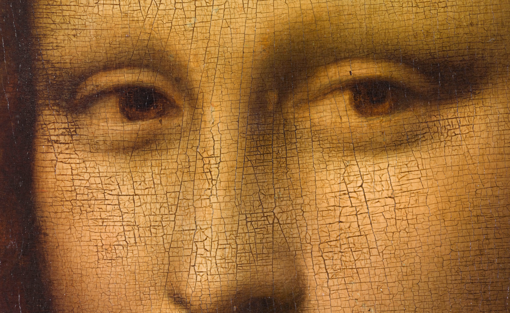
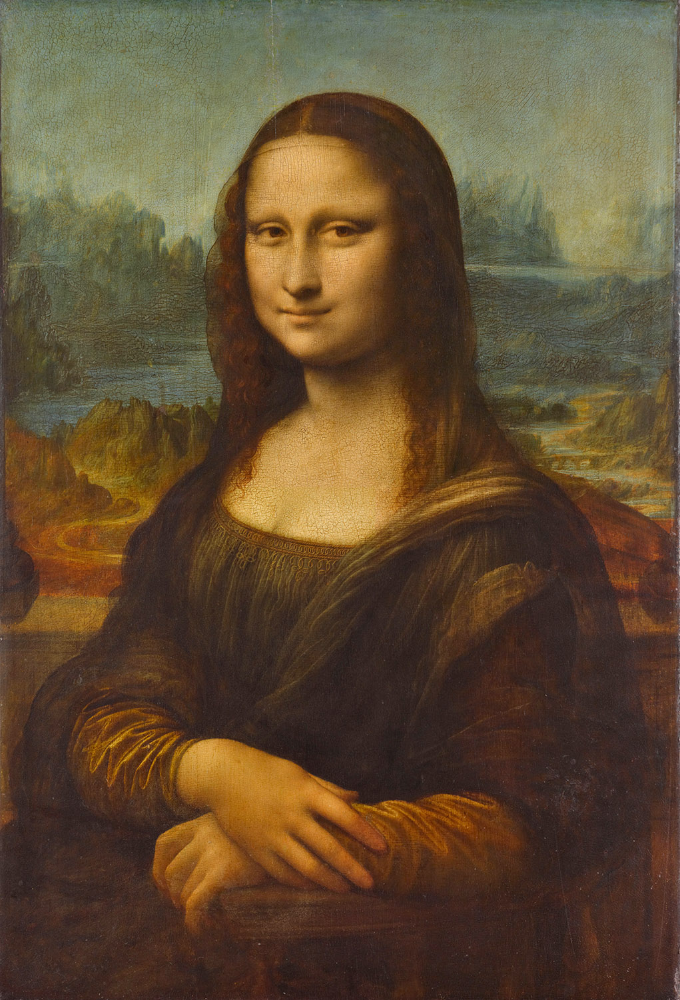
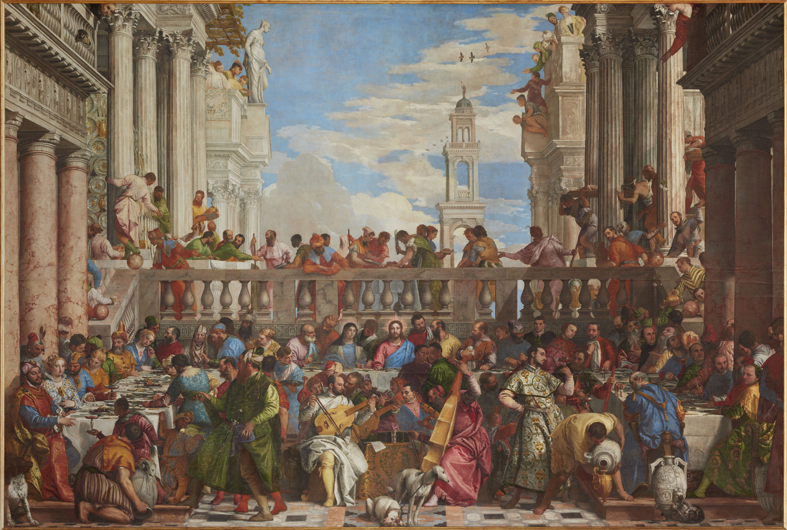

DID YOU KNOW?
Mona Lisa
This is the most famous portrait in the world. It shows Lisa Gherardini, wife of the Florentine silk
merchant Francesco del Giocondo – hence her Italian name La Gioconda and her French name La Joconde.
Painted against a distant landscape, she stares out at us with her famously enigmatic smile...but
another aspect of the painting that makes it so special is Leonardo da Vinci’s sfumato technique, based
on the use of glazes to create a ‘smoky’ effect with subtle contours and contrasts. Leonardo captured
the sitter turning towards the viewer in a natural movement that brings the painting to life.

A new blue
In 2019, the Salle des États underwent the latest in a series of embellishments when its walls were
repainted a deep midnight blue, heightening the contrast with the rich palette of reds, yellow, oranges
and greens in the Venetian masterpieces on display in this room.
A historic room
The Salle des États, designed by the architect Hector Lefuel, was built between 1855 and 1857. During the
Second Empire, it accommodated major legislative sessions presided over by Napoleon III, who insisted on
a lavish painted decoration to the glory of the Empire. After his fall from power in 1870, the room
became part of the museum and was used to display 19th-century French painting. At the beginning of the
Third Republic, the architect Edmond Guillaume adapted the room to suit its new purpose: the windows
were sealed off to make more room for the artworks and a glass ceiling was added, introducing light from
above to avoid reflections on the paintings. After World War II, the works by French artists were
replaced by Venetian paintings.
Venetian painting
Titian, Tintoretto, Veronese…The greatest Venetian painters shared a love of dazzling colours. Veronese’s
monumental Wedding Feast at Cana fills the display space opposite the Mona Lisa, and all around are
other famous paintings! They include Titian’s Pastoral Concert and Man with a Glove, Tintoretto’s
vigorous sketch for The Coronation of the Virgin, also known as Paradise (part of a vast decorative
scheme for the Sala del Maggiore Consiglio in the Doge’s Palace in Venice), magnificent portraits such
as Veronese’s Portrait of a Venetian Woman, known as La Bella Nani, and many more…a burst of light and
colour reflecting the extraordinary skill of Venetian Renaissance artists.

DID YOU KNOW?
The biggest painting in the Louvre
At over 6 metres high and almost 10 metres wide, The Wedding Feast at Cana is the biggest painting in the
Louvre. It depicts an extraordinary banquet with a crowd of some 130 different characters in a blaze of
light and colour.
Veronese painted the scene for the refectory of the monastery on the island of San Giorgio Maggiore in
Venice. In 1798, Napoleon’s troops confiscated the painting and had it shipped to Paris. When the Empire
fell in 1815, most of the confiscated paintings were returned to Italy, but it was feared that the
return journey would damage this large work, which was therefore kept in exchange for a painting by
Charles Le Brun, The Feast in the House of Simon. Nonetheless, Veronese’s huge masterpiece had to be
moved twice in later years, when Paris was at war, in 1870 and 1939.

Veronese (Paolo Caliari), The Wedding Feast at Cana
] Room 711 (Salle des États), Denon wing, Level 1